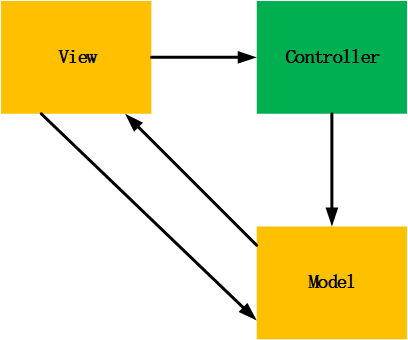
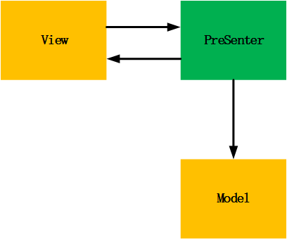
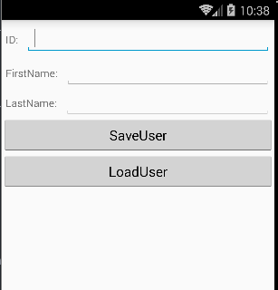
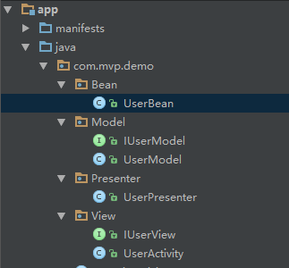

一、MVP概述
MVP(Model-View-Presenter)：是众所周知的一种开发模式，为了解决MVC中View层和Model层之间的强耦合，Controller是基于行为的并被多个View共享，从而演变出了MVP模式。他们的目的都是为了划分模块职责，
降低模块之间的耦合，提高代码的复用。就Android来说，MVP的Model层相对于MVC是一样的，Activity和Fragment不再是Controller层，
而是纯粹的View层，所有关于用户事件的转发全部交由Presenter层处理。


1.1 MVP各层的职责
- View: 负责绘制UI元素，与用户进行交互（android中体现为Activity）;
- Model: 负责存储、检索、操纵数据；
- Presenter: 作为View和Model交互的中间纽带，处理两者之间的业务逻辑。
以上是MVP的标配，在实际的开发中，使用MVP模式进行开发一般会包含以下几个成员：
- View:(同上)
- Model:(同上)
- Presenter:(同上)
- View Interface:需要View实现的接口，View可通过View Interface与Presenter进行交互，降低耦合；
- Model Interface:也是需要Model实现的接口，完成Model与Presenter之间进行交互。
1.2 MVP与MVC的区别
MVP模式：
- View不直接与Model交互，而是通过与Presenter交互来与Model间接交互；
- Presenter与View的交互是通过接口来进行的，更有利于添加单元测试；
- 通常View与Presenter是一对一的，但是复杂的View可能会绑定多个Presenter来处理不同的业务逻辑。
MVC模式：
- View可以与Model直接交互；
- Controller是基于行为的，并且可以被多个View共享；
- 可以负责决定显示哪个View。
MVP也不是完美的，它的缺点是:造成类数量爆炸，代码复杂度和学习成本高，在某些场景下Presenter的复用会产生接口冗余。
二、Android开发中使用MVP例子
说了基本的内容，现在通过实践来说明MVP（该例子在网上找的），主要实现如下图Demo：可以从EditText读取用户信息并存取，也可以根据ID来从后台读出用户信息并显示。

整个Demo的布局很简单，主要的目录结构如下图：

从上图中可以看得出View与Presenter之间，Model与Presenter之间都是通过接口来完成的，即降低耦合也方便进行单元测试。
首先创建一个UserBean，用于保存用户数据。
下面对各个模块一一讲解：
2.1 Model
Model中主要有包含UserModel和接口IUserModel,并且UserModel实现了接口IUserModel.
在接口IUserModel中定义了保存数据到Model以及从Model获取数据的方法，具体见注释。
UserModel需要实现接口IUserModel，并完成各个方法的实际操作（这里只是为了讲解MVP，至于Model中怎么样去处理数据，在这里我们不关心）。
2.2 View(Activity)
View中主要包含UserActivity和接口IUserView,并且UserActivity实现了接口IUserView。并且在UserActivity中包含一个Presenter的变量将自己喝Presenter进行绑定。
在IUserView中定义了可以从View中获取数据的方法以及为View添加数据的方法，具体见注释：
UserActivity实现了IUserView接口，实现每个方法。在UserActivity中有3个EditText用于显示数据和输入数据，以及2个Button。
实现从UserActivity中获取数据并调用Presenter中保存数据的方法，以及调用Presenter中能从Model中获取数据的方法并显示在View上。
2.3 Presenter
Presenter中持有与View交互接口IUserView的引用以及与Model交互接口IUserModel的引用，并用构造函数与View进行绑定。
在Presenter中实现了从Model中取数据并将数据显示到View，还实现了将View传来的数据保存到Model中。
可以看到，View只负责处理与用户进行交互，并把数据相关的逻辑操作都扔给了Presenter去做。而Presenter调用Model处理完数据之后，再通过IUserView更新View显示的信息。